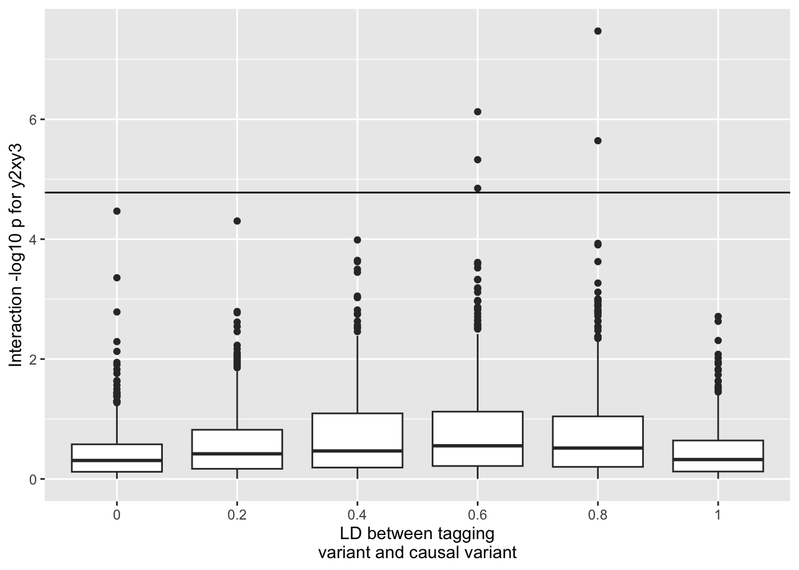
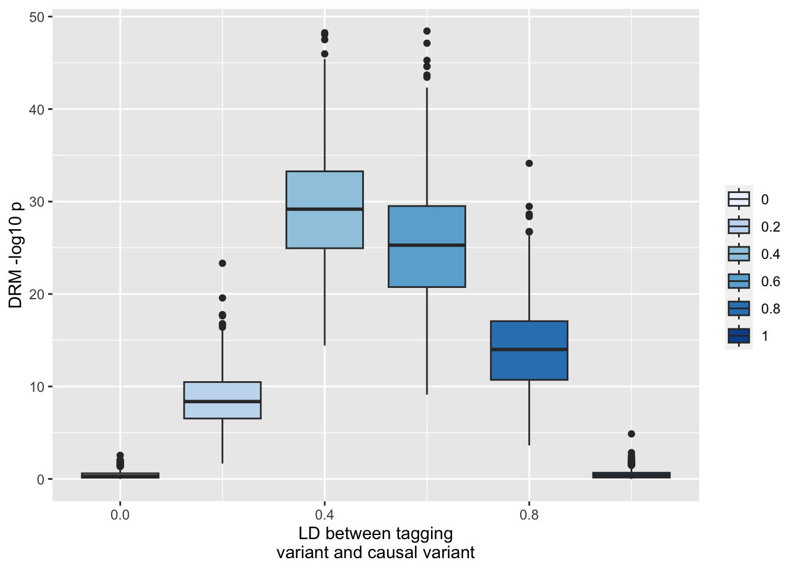
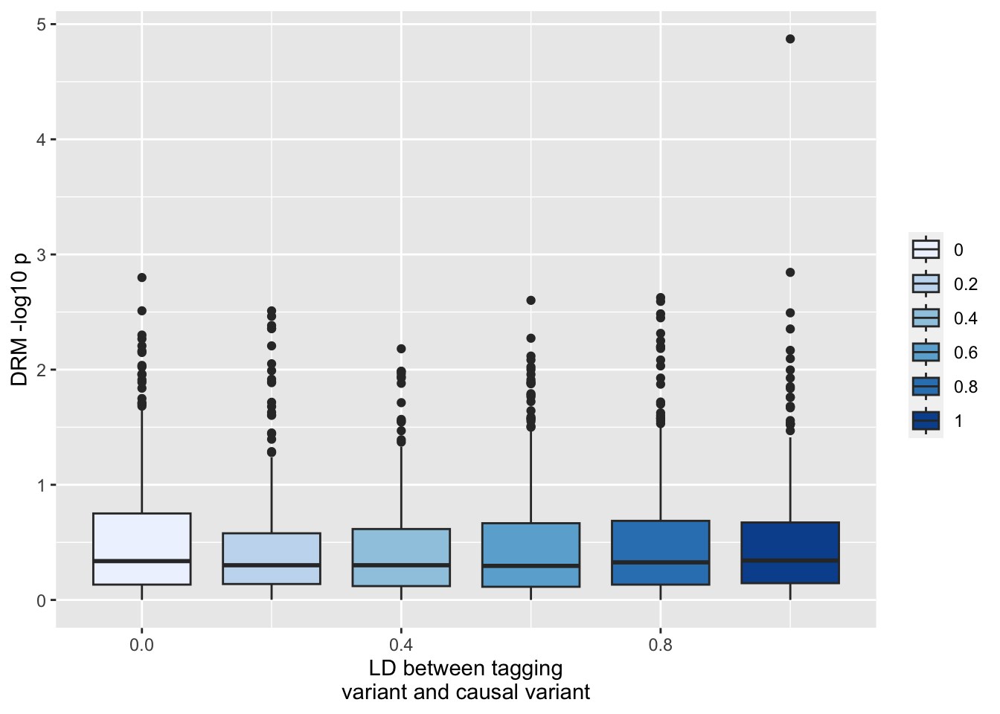
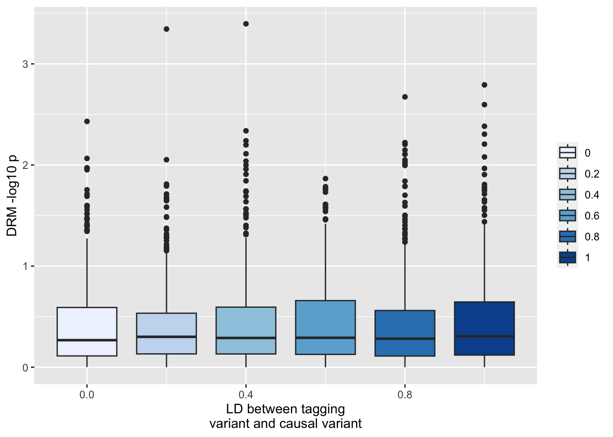
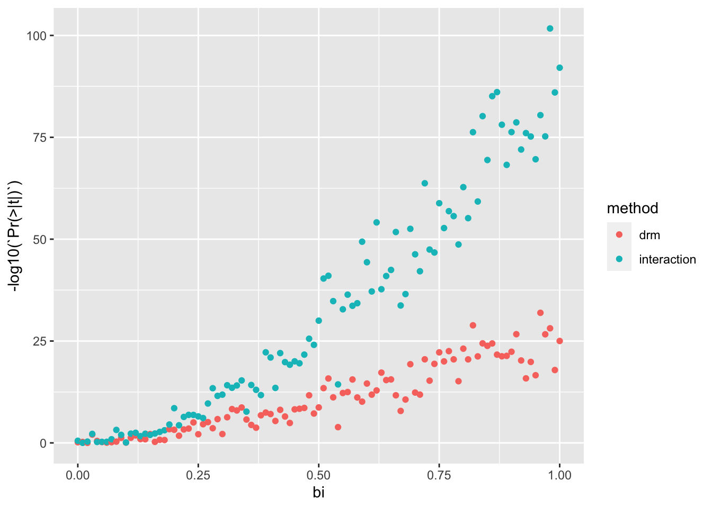

This paper describes how incomplete linkage disequilibrium can lead to inflated test statistics for interactions - https://www.nature.com/articles/s41586-021-03765-z. Because interaction terms contribute to variance heterogeneity across genotype classes, this could also inflate vQTL detection methods.
Example model
Suppose a system with three variants and one trait. The trait $x$ is influenced by a single additive causal variant $y_1$. But there is another variant in LD with this causal variant $y_2$. Finally, a third variant is independent of all other variables (think of that as a trans SNP). So
\[
x_i = y_{1,i} + e_i
\]
But we test for an interaction between y_2 and y_3.
Run some simulations…
library(dplyr)
Attaching package: 'dplyr'
The following objects are masked from 'package:stats':
filter, lag
The following objects are masked from 'package:base':
intersect, setdiff, setequal, union
This is what happens to the genetic interaction between y_2 and y_3 - remember that neither of these have a causal effect, and there is no interaction term, however y_2 is correlated with the causal variant y_1
ggplot(resp, aes(x=as.factor(r1), y=-log10(F))) +geom_boxplot() +geom_hline(yintercept=-log10(0.05/nrow(resp))) +scale_fill_brewer(type="seq") +labs(y="Interaction -log10 p for y2xy3", x="LD between tagging\nvariant and causal variant")

So you get some false positives even after bonferroni correction. However now look at what happens to the variance QTL estimate for y_2 (the SNP that has no interaction but is in incomplete LD with the additive SNP y_1). Here we’ll use the DRM method to test for vQTL effects at y_2
ggplot(resp, aes(x=r1, y=-log10(drm2))) +geom_boxplot(aes(fill=as.factor(r1))) +scale_fill_brewer(type="seq") +labs(y="DRM -log10 p", x="LD between tagging\nvariant and causal variant", fill="")

This is really extreme type 1 sensitivity to incomplete LD. There’s no problem at the actual causal locus (y_1)
ggplot(resp, aes(x=r1, y=-log10(drm1))) +geom_boxplot(aes(fill=as.factor(r1))) +scale_fill_brewer(type="seq") +labs(y="DRM -log10 p", x="LD between tagging\nvariant and causal variant", fill="")

Or at the unlinked locus y_3
ggplot(resp, aes(x=r1, y=-log10(drm3))) +geom_boxplot(aes(fill=as.factor(r1))) +scale_fill_brewer(type="seq") +labs(y="DRM -log10 p", x="LD between tagging\nvariant and causal variant", fill="")

Implications - performing an exhaustive search is going to give quite problematic results if the main effects aren’t controlled. So you’d really have to know what all the main effects are before performing the vQTL tests in order to control for them. Note that incomplete control of the main effects is inevitable and we should be anticipating elevated type 1 error rates for any SNPs that are in the region of any large main effects.
Power issues when controlling for main effects
The other problem is actually controlling for main effects. Suppose that a probe has two distal SNPs that interact e.g.
tibble [1 × 5] (S3: tbl_df/tbl/data.frame)
$ Estimate : num 0.0194
$ Std. Error: num 0.0138
$ t value : num 1.4
$ Pr(>|t|) : num 0.161
$ method : chr "drm"
The test statistic for the interaction test has massively attenuated.
Where does this leave us?
If a SNP is a known additive causal variant then it is relatively safe from type 1 error
If a SNP is not a known additive causal variant, then it is susceptible to type 1 error due to incomplete LD with actual additive causal variants
If we adjust the probe for additive causal variants before testing the SNP, we risk drastically reducing the vQTL effect that arise due to GxG interactions
Note that this applies to GxE for when adjusting for other covariates too - e.g. if we adjust probes for smoking, age, sex, cell type etc and we are trying to find interactions with those based on vQTLs then the power to identify those vQTL effects drastically reduces
Power of vQTL vs interaction
Suppose we simulate a GxE interaction. We can try to detect it either using a vQTL method (e.g. DRM) or using a direct interaction test.
sim_gxe <-function(n, p, bi){ params <-environment() %>%as.list() %>%as_tibble() g <-rbinom(n, 2, p) e <-rnorm(n) y <- g + bi * g*e + e +rnorm(n)bind_rows(test_drm(g, y),summary(lm(y ~ g*e))$coef %>%as_tibble() %>%slice(n=4) %>%mutate(method="interaction") ) %>%bind_cols(., params)}param <-expand.grid(n=1000,bi=seq(0,1,by=0.01),nsim=10,p=0.5) %>%select(-nsim)res <-lapply(1:nrow(param), function(i) do.call(sim_gxe, param[i,])) %>%bind_rows()res %>%ggplot(., aes(x=bi, y=-log10(`Pr(>|t|)`))) +geom_point(aes(colour=method))

The direct interaction test seems much better powered to detect these associations.